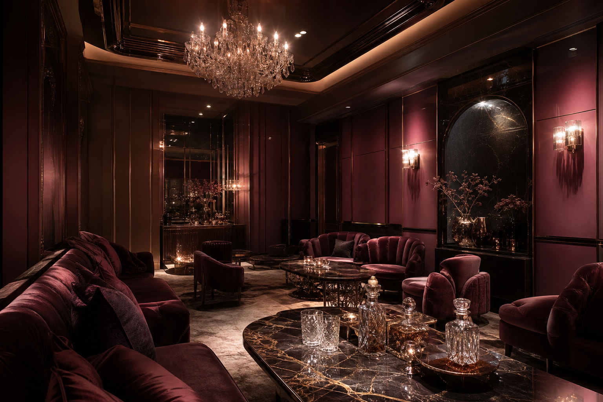

Compare · Haeundae
해운대 룸싸롱 분위기 타입 비교 — 조용한 대화형부터 활기 있는 자리까지
같은 해운대 안에서도 업장마다 분위기가 전혀 다릅니다. 비즈니스 대화가 필요한 자리, 친구끼리 즐기는 자리, 소규모 프라이빗 자리 — 목적에 따라 어떤 타입이 맞는지 비교했습니다.

해운대 룸싸롱을 검색하면 가격 정보에 먼저 눈이 가지만, 실제 만족도를 결정하는 것은 분위기가 내 목적과 맞았는지입니다. 같은 가격대라도 업장의 콘셉트에 따라 체감이 완전히 달라집니다.
이 글에서는 해운대 룸싸롱을 분위기 타입 세 가지로 나누어 비교합니다. 어떤 자리인지에 따라 어떤 타입이 맞는지 기준을 정리하면, 문의할 때부터 정확한 요청이 가능해집니다.
타입 A — 조용한 비즈니스 대화형
출장 접대, 거래처 모임, 상사와의 저녁 2차처럼 대화가 핵심인 자리에 맞는 타입입니다. 이런 업장은 음악 볼륨이 낮고, 조명이 차분하며, 룸 간 방음이 잘 되는 구조를 갖추고 있습니다.
TC(테이블 코디네이터)도 대화 흐름을 끊지 않는 방향으로 응대하는 경향이 있습니다. 술을 세게 권하기보다 분위기를 자연스럽게 유지하는 데 집중합니다. 접대 자리에서 상대방이 편안하게 느끼는 것이 중요하다면 이 타입이 적합합니다.
단점은 활기가 적다는 것입니다. 친구끼리 신나게 놀고 싶은 자리에는 다소 조용하게 느껴질 수 있습니다. 목적을 먼저 정하고 타입을 맞추는 것이 중요한 이유입니다.
타입 B — 활기 있는 모임·여행형
여행 중 친구 모임, 동창 모임, 생일 파티처럼 분위기를 띄우는 것이 목적인 자리에 맞습니다. 음악이 적당히 크고, 조명 연출이 화려하며, TC의 응대도 적극적인 편입니다.
이 타입은 인원이 많을수록 분위기가 잘 살아납니다. 4~6명 이상의 일행이 함께 방문하면 룸 전체의 에너지가 올라가고, 서로 대화를 나누면서 자연스럽게 분위기가 형성됩니다.
다만 비즈니스 목적의 조용한 자리에는 맞지 않습니다. 음악 소리와 활기가 대화에 방해가 될 수 있습니다. 또한 늦은 시간대일수록 전체 분위기가 더 올라가므로, 너무 이른 시간에 방문하면 기대한 활기가 부족할 수 있습니다.
타입 C — 소규모 프라이빗형
2~3명의 소규모 일행이 조용하면서도 편안하게 시간을 보내고 싶은 자리에 맞습니다. 아담한 룸에서 가까운 거리에서 대화하며, 부담 없이 한두 잔 즐기는 분위기입니다.
이 타입은 인원이 적기 때문에 기본 세트의 구성이 가벼운 경우가 많습니다. 양주 세트 대신 와인이나 가벼운 주류 옵션이 있는 곳도 있습니다. 가격 부담도 상대적으로 낮은 편이지만, 모든 업장이 소규모 룸을 운영하는 것은 아니므로 예약 시 확인이 필요합니다.
첫 방문자가 부담 없이 경험해보기에 가장 접근하기 쉬운 타입이기도 합니다. 대규모 자리가 부담스럽다면 이 형태부터 시작하는 것이 자연스럽습니다.
세 가지 타입을 한눈에 비교
| 기준 | A. 비즈니스 대화형 | B. 활기 모임형 | C. 소규모 프라이빗 |
|---|---|---|---|
| 적합 인원 | 3~6명 | 4~8명 이상 | 2~3명 |
| 분위기 | 차분·격식 | 활기·자유 | 편안·아늑 |
| 음악 볼륨 | 낮음 | 중~높음 | 낮음 |
| 추천 목적 | 접대·출장 | 여행·동창·생일 | 가벼운 방문·첫 경험 |
| 가격대 | 중~높음 | 중~높음 | 낮음~중 |
문의할 때 분위기 타입을 전달하는 방법
대부분의 사람이 문의할 때 "가격이 얼마예요?"부터 시작합니다. 하지만 분위기 타입을 먼저 전달하면 훨씬 정확한 안내를 받을 수 있습니다.
예를 들어 "금요일 밤, 4명, 출장 접대라서 대화 위주의 조용한 곳을 찾는다"고 하면 A타입에 맞는 곳을 안내받게 됩니다. "여행 중 친구 6명이 함께 가는데, 분위기가 활기찬 곳이 좋다"고 하면 B타입으로 안내됩니다.
이렇게 목적과 분위기를 먼저 전달하면, 가격도 그 맥락 안에서 비교할 수 있어 판단이 훨씬 쉬워집니다. 숫자부터 비교하면 맥락 없는 선택이 되지만, 분위기부터 정하면 기준이 있는 선택이 됩니다.
같은 업장이라도 시간대에 따라 분위기가 바뀐다
한 가지 더 알아두면 좋은 것은, 같은 업장이라도 방문 시간에 따라 분위기가 달라진다는 점입니다. 저녁 7~9시에는 전체적으로 차분한 무드가 유지되지만, 밤 10시를 넘어가면 활기가 올라갑니다.
비즈니스 대화형(A타입)을 원한다면 이른 시간대가 유리하고, 활기 있는 모임형(B타입)을 원한다면 늦은 시간대가 분위기와 더 잘 맞습니다. 같은 업장을 선택하더라도 시간대를 조율하면 원하는 무드에 더 가까워질 수 있습니다.
결국 분위기가 가격보다 먼저인 이유
해운대 룸싸롱에서 만족스러운 시간을 보내려면 가격 비교보다 분위기 선택이 먼저입니다. 같은 금액을 쓰더라도 분위기가 맞지 않으면 "비싸게 느껴지고", 분위기가 딱 맞으면 "가격 이상의 경험"이 됩니다.
일행의 구성, 방문 목적, 원하는 에너지 수준을 먼저 정리한 뒤, 그에 맞는 타입을 문의하면 해운대 밤 일정의 만족도는 확실히 달라집니다. 분위기를 모르고 가는 것과 알고 가는 것의 차이는, 같은 공간이라도 전혀 다른 경험으로 이어집니다.